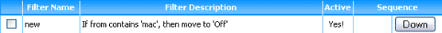
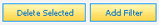
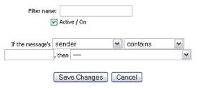
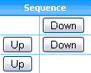
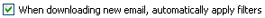

The Filter Manager allows you to create filters which automatically move, delete, and save email every time your email accounts are checked for
new messages. Common Filter Manager tasks include:
Navigating the Filter Manager
The layout of the Filter Manager is similar to that of the Inbox, as each filter is represented on a separate row in a filter list. Each row
includes a checkbox, the name of the filter, a filter description, notification of whether or not the filter is "active" or on, as well
as controls for managing the filter application sequence.

Clicking the linked filter name will launch the filter editor in a new popup window.
Add a New Filter
To add a new filter, click the "Add Filter" button located above and below the filter list.

The Filter Editor will launch in a new popup window and will require three steps to complete. First, enter a name for your new filter in the field provided.
Second, place a checkmark in the checkbox labeled "Active". This indicates your filter is "on".
Finally, review the dropdown and text boxes and compose a filter rule.

Rule configuration is fairly straightforward. Use the fields provided to build a sentence that describes the filter's actions. For example,
"If the message's SENDER CONTAINS MOM, then MOVE TO FOLDER 'Saved'", would move any new messages from "Mom" to the "Saved" folder.
In addition, just as with other folder dropdowns found throughout the EMU Webmail interface, an "Add New Folder" option is included to create a new
folder without having to visit the Folder Manager first.
Delete a Filter
Deleting a Filter works much in the same way as deleting a message from a folder. Place a checkmark in the checkbox next to the filter(s) you wish to delete,
then click the "Delete Selected" button located above and below the filter list. As always, deleting a filter permanently removes it from your account.
Sequencing Filters
Whether filters are or are not automatically applied, they work in sequence. The filter at the top of the
filter list is applied first, whereas the last filter on the list is applied last. This is important in those instances where a new email might
contain data that would match more than one filter.
For example, an account's Filter Manager might include a filter for moving messages received from "Mom" to the "Saved" folder, as well as a filter for moving
messages with the subject "Re: Virus Alert" to the "Trash" folder. If a message was received from Mom that had the subject "Re: Virus Alert" and the "Mom" filter
was the first filter on the list, the message would be moved to the "Saved" folder. On the other hand, if the same email was received when the "Re: Virus Alert"
filter was at the top of the list, it would instead be moved to the "Trash" folder.

Controlling the sequence of filters is very simple. Use the "Up" and "Down" buttons located in the sequence column on each row of the filter list to rearrange
the filters. Once a button is clicked, the change is immediate and does not require any saving or updating.
Applying Filters Automatically
Your may apply or run those filters in the Filter Manager marked "active" in one of two ways. First, automatically, meaning that any time new email is
downloaded, your filters are automatically applied. Second, manually, meaning that once any new messages have been downloaded, they will be stored in your
Inbox until action is taken on them.

If you wish to have your message automatically filtered, place a checkmark in the checkbox at the bottom of the filter list or enable the option on the
Account Info page. If you wish to apply filters manually, ensure the checkbox
does not have a checkmark, and an "Apply Filters" button will appear among the message controls in all folders, including the Inbox.